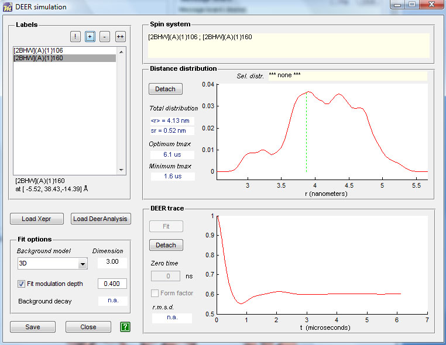
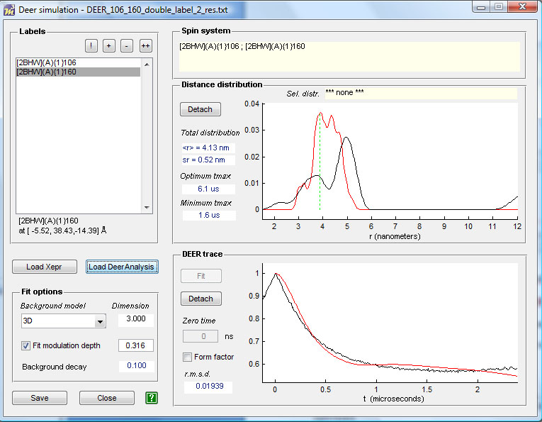

Overview • Getting started • Protocol for spin labeling and DEER simulation • Loading the protein • Site scan ↑ | ↓
MMM allows simulating a DEER trace and the distance distribution based on the computed rotamers. To simulate the DEER trace use the menu item:
EPR/DEER
A window will appear where you can select which computed side chains to use for the DEER simulation (in this case there are only two computed sites: 106 and 160).
Select the site 106, press + to add it in the spin system, then select the second site, press +.
Once you selected the first pair of spins, the DEER trace and the distance distribution will appear.

To copy the figures, Detach them and copy/paste the Matlab figures by using the menu of the detached figures.
To compare the computed DEER trace with the experimental one, choose
Load Xepr (to load the original DEER trace in Xepr format)
And choose the Fit options for the background.
Or
Load Deer Analysis (to load the processed DEER data that were saved with DeerAnalysis)
The latter option is recommended in the case the background correction was difficult to perform, and the analysis has been optimized. However, if you have doubts about the background correction performed in DeerAnalysis, you should also try whether the model-based approach of MMM can find a more convincing fit.
You find the experimental data and DeerAnalysis result for this label pair in the LHCII subdirectory of MMM.
The comparison will appear in the same window. To copy the comparison plots, detach the figures as before. With the Save button you can save the underlying data as ASCII files and process them in other programs (e.g. Origin or, if you must, Excel).

Comparison of the computed and experimental traces gives a qualitatively good agreement in this case. Beware that close to position 106 there is a residue with missing atoms (green amino acid in the Hierarchy window). The possible influence of missing atoms on the calculation must be investigated.